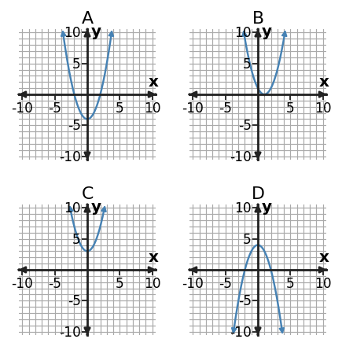

Algebra 1 · Unit 6 · Section 6.3 · Investigation
Discriminant and Formula Lab
Quadratic Formula
Learning Target: Students will solve quadratic equations using the quadratic formula and interpret solutions.
Directions
- Work with a partner unless your teacher assigns a different grouping.
- Show the evidence you use, not only the final answer.
- When a representation changes, keep the meaning of the quantities attached to your work.
- Revise an answer if later evidence shows that your first claim was incomplete.
Part 1 · Predict from the Discriminant

Match each graph to a discriminant that is positive, zero, or negative. Explain the connection.
Part 2 · Coefficient Map
| Equation | $a$ | $b$ | $c$ | $b^2-4ac$ | Predicted real roots |
|---|---|---|---|---|---|
| $x^2-5x+6=0$ | |||||
| $x^2+4x+4=0$ | |||||
| $2x^2+x+5=0$ |
Part 3 · Formula Work
Use the quadratic formula to solve $2x^2-3x-4=0$. Give exact solutions and decimal approximations.
Synthesis
Why is calculating the discriminant first useful even when you still plan to use the full quadratic formula?